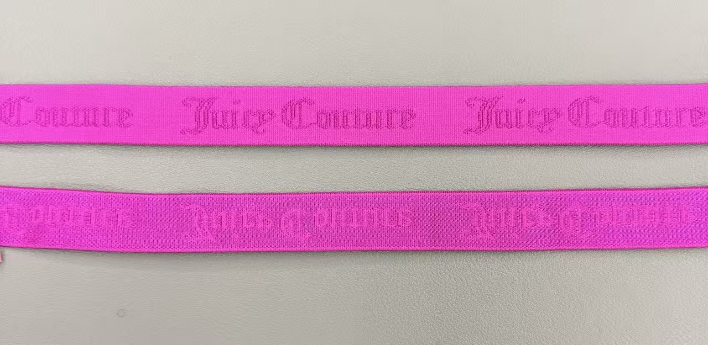

Factory
Elastic Production With Repeat-Order Consistency
This page is prepared as a factory showcase area. It can later be expanded with workshop photos, weaving machines, printing equipment, color cards, inspection steps, packing photos, and certificates.
- Product DevelopmentTranslate artwork and reference samples into elastic construction plans.
- Production ControlManage width, tension, color, logo clarity, surface finish, and roll packing.
- Quality ReviewCheck appearance, elasticity, handfeel, color consistency, and packing before shipment.

Production Focus
What Buyers Usually Care About
Stable Width
Elastic width and edge finish are controlled for garment sewing and size consistency.
Color Matching
Brand colors and garment fabric colors can be matched during sample development.
Roll Packing
Bulk elastic rolls can be packed for apparel factories, distributors, and overseas buyers.